Михаил Кузьмич Луконин родился в 1918 году в Астраханской губернии. Детство прошло на Волге, а в 12 лет он вместе с семьей переехал в Сталинград, где начал работать на тракторном заводе и одновременно увлёкся поэзией.
В 1937 году окончил Сталинградский учительский институт, позже — Литературный институт в Москве. Участвовал в советско-финской войне, а с первых дней Великой Отечественной ушёл на фронт военным корреспондентом. Был ранен, выходил из окружения. Война оставила глубокий след в его творчестве.
Михаил Луконин — автор многих стихотворений и поэм, лауреат Государственных премий СССР. Его перу принадлежат переводы с бурятского, казахского и грузинского языков. Он дружил с Константином Симоновым, Расулом Гамзатовым, Маргаритой Агашиной.
Мемориальная квартира поэта была открыта в 1978 году на улице Чуйкова, 31. Здесь полностью сохранён интерьер, созданный самим Лукониным. В квартире хранятся личная библиотека, рукописи, грампластинки, сувениры из разных стран, а также подарки от друзей: бурка и папаха от Расула Гамзатова, портрет работы Ильи Глазунова, разноцветные валенки от Маргариты Агашиной, портрет Эрнеста Хемингуэя и многие другие реликвии.
Сегодня музей-квартира — это место встречи творческой интеллигенции Волгограда. Здесь проходят литературные вечера, лекции, концерты, встречи с поэтами и писателями. В 2023 году музей вошёл в Ассоциацию литературных музеев России. И по сей день квартира Луконина сохраняет своё главное качество — гостеприимство, открывая двери для всех, кто хочет прикоснуться к миру поэта.
Экспонаты музея-квартиры
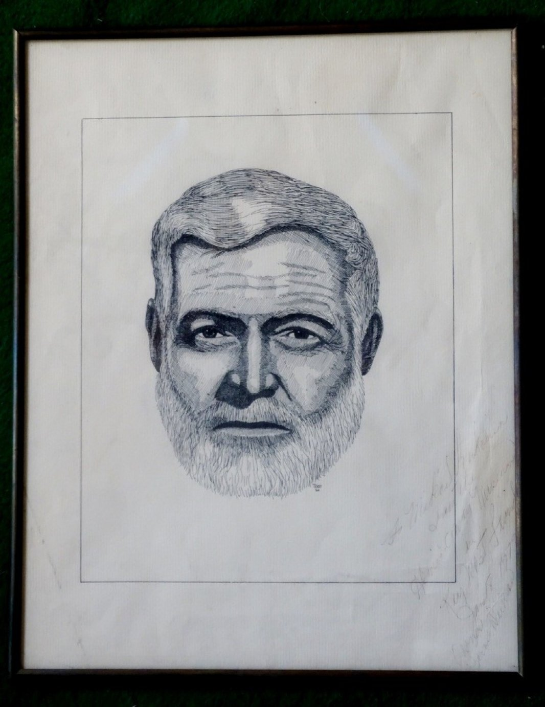
Портрет Э. Хемингуэя
Графика. Портрет Э. Хемингуэя с дарственной надписью «Михаилу Луконину от музея Хемингуэя в Pey Wests Land. 18.01.1973 г.» Куба. 1973 г.
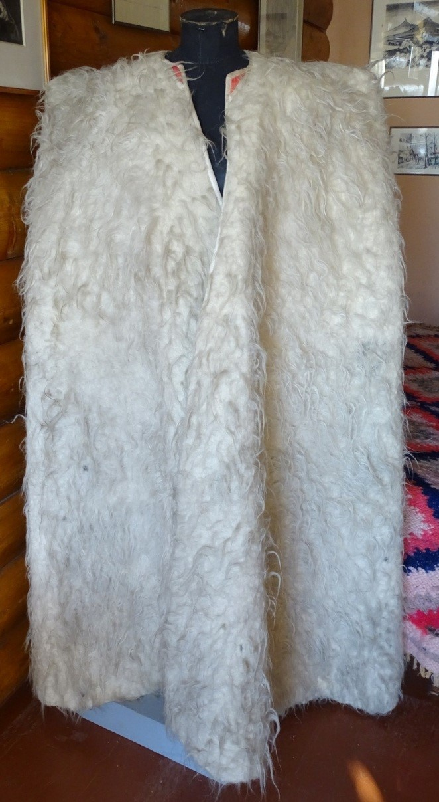
Бурка белая
Подарок к 50-летию М.К. Луконина от Р. Гамзатова. Дагестан. 1968 г.
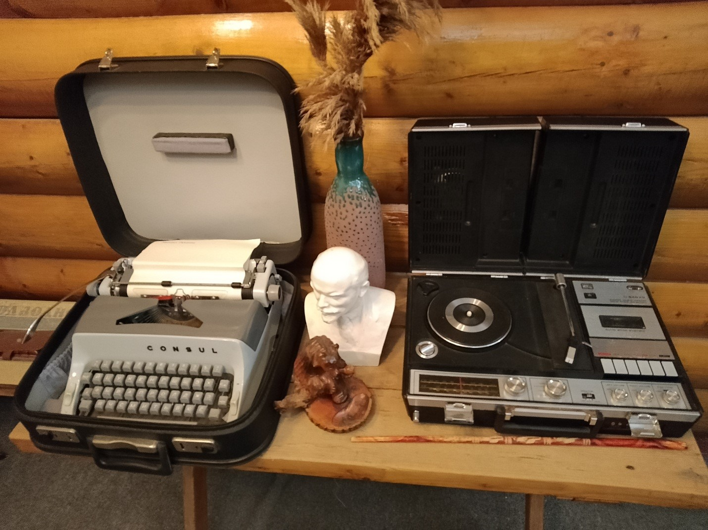
Печатная машинка «Consul» и проигрыватель «Sanyo»
На этой машинке поэт печатал свои стихи и рукописи.
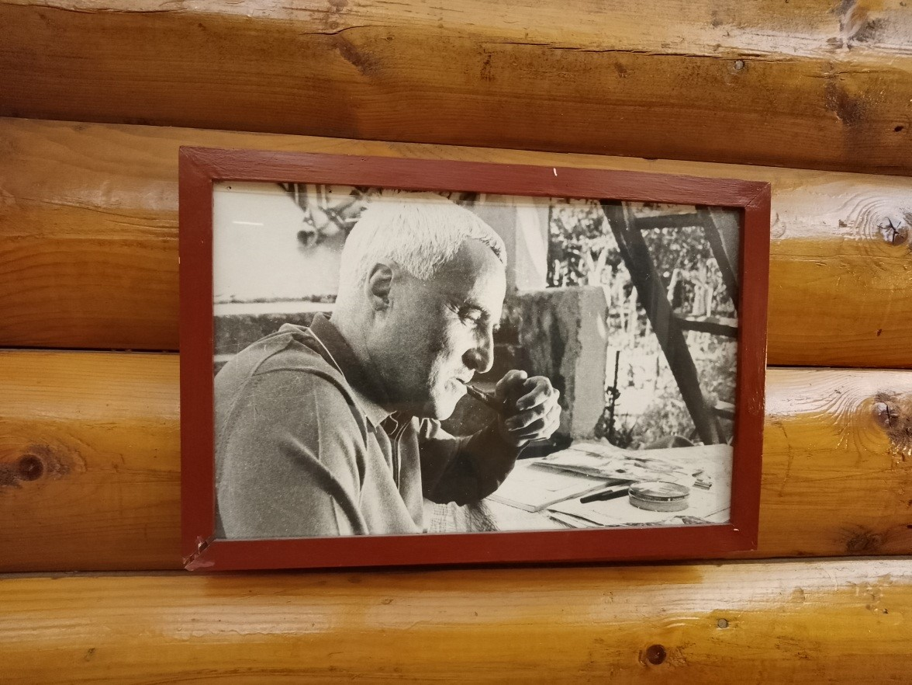
Портрет К. Симонова
Константин Симонов — друг и соратник Луконина по литературному институту.
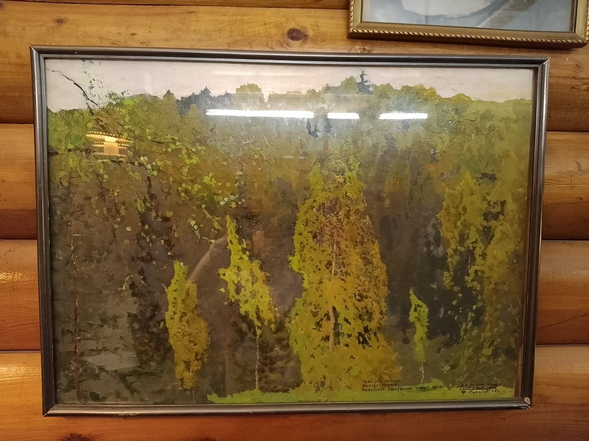
Картина Ф. Суханов «Буйство весны»
Волгоград. 1968 г. С автографом автора Луконину М.К. в день 50-летия поэта.
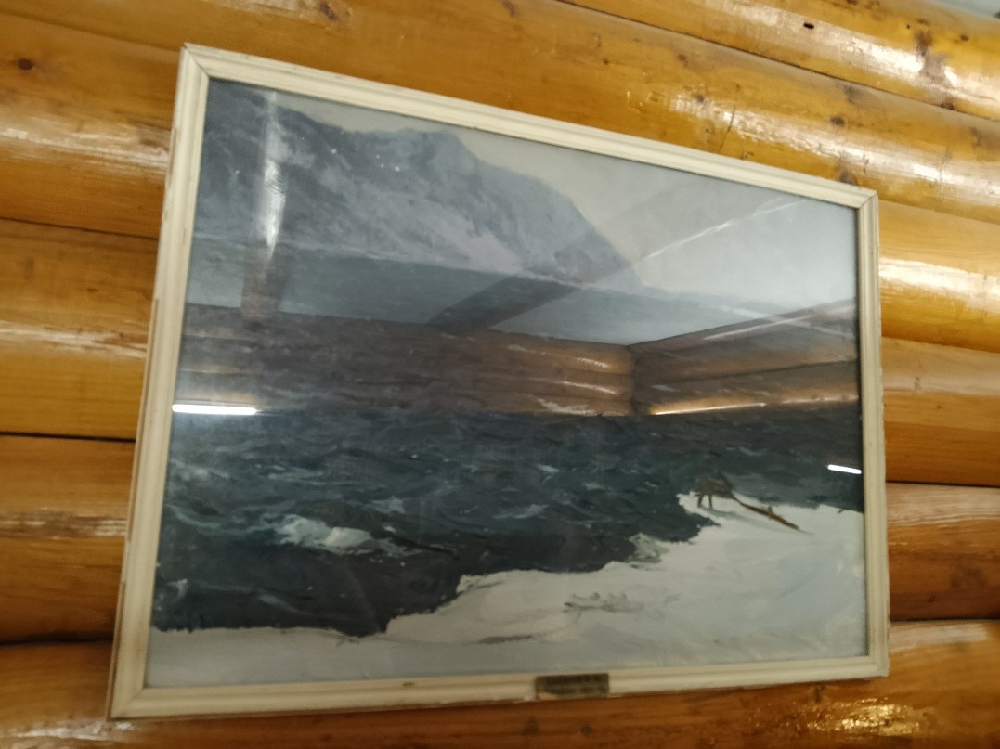
Картина Ф. Суханов «У Байкала»
СССР. 1962 г.
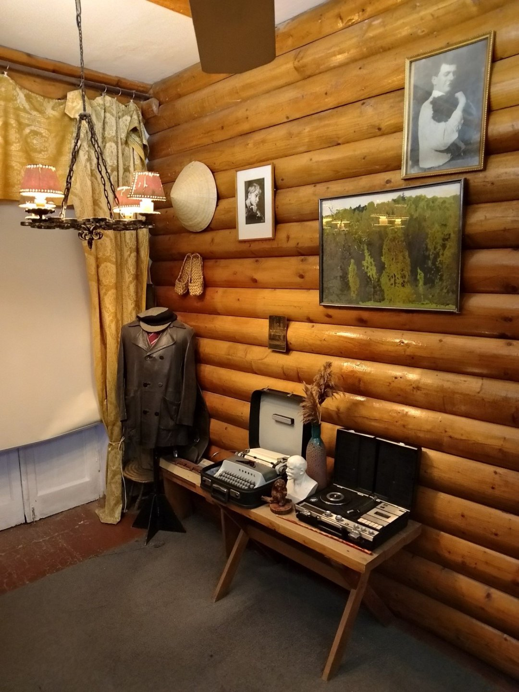
Интерьер квартиры М.К. Луконина
Волгоград, где он жил во время приезда в творческие командировки. Сохранён в первозданном виде.
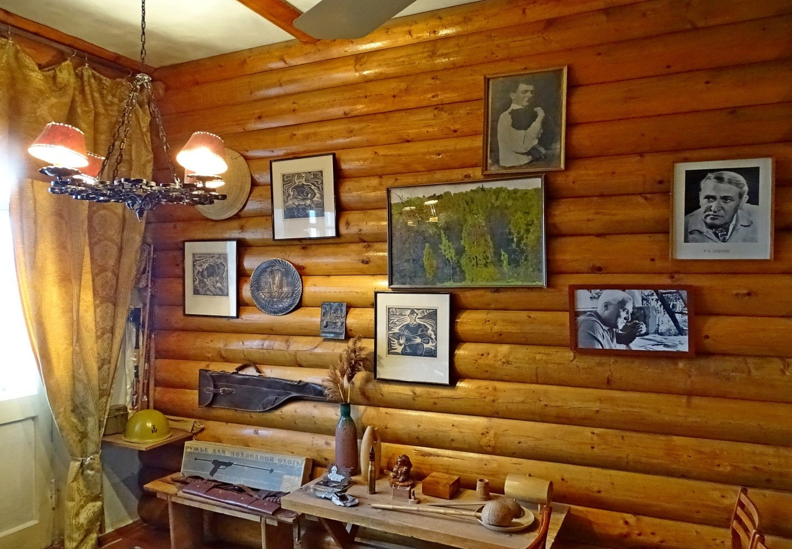
Рабочий кабинет поэта
Здесь создавались многие произведения Луконина.
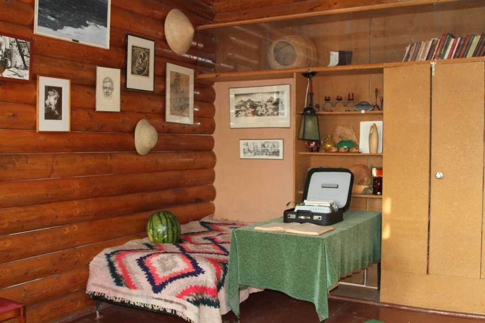
Гостиная в квартире Луконина
Место встреч с друзьями-поэтами и творческой интеллигенцией.
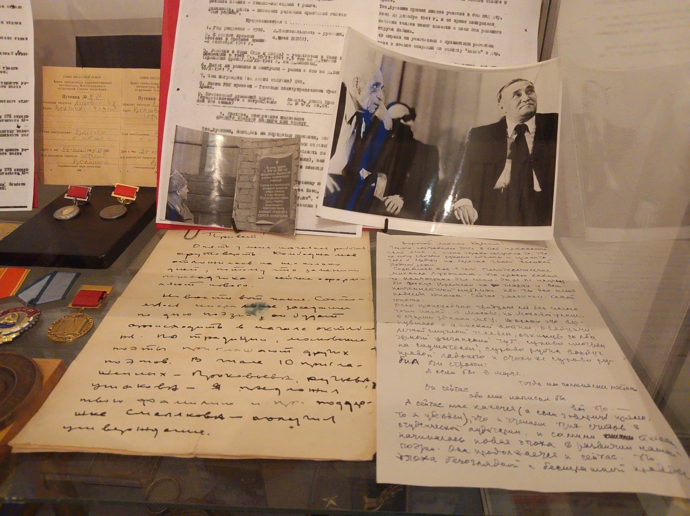
Документы, фотографии и награды
Личные вещи и свидетельства творческого пути поэта.
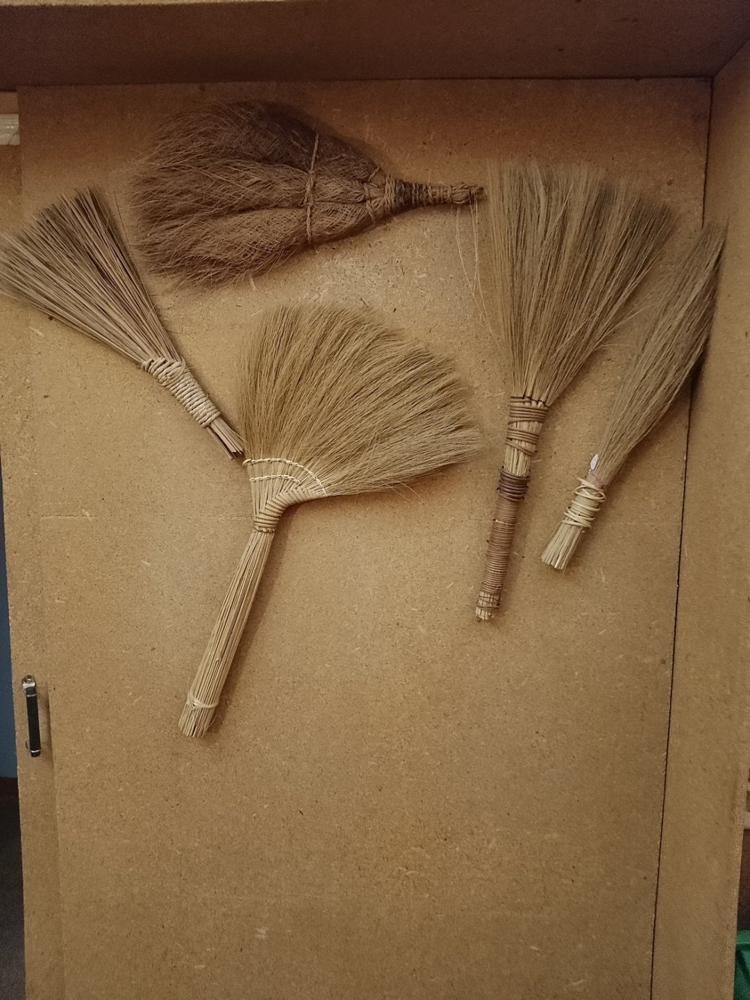
Коллекция веников
Уникальная коллекция в интерьере музея-квартиры.
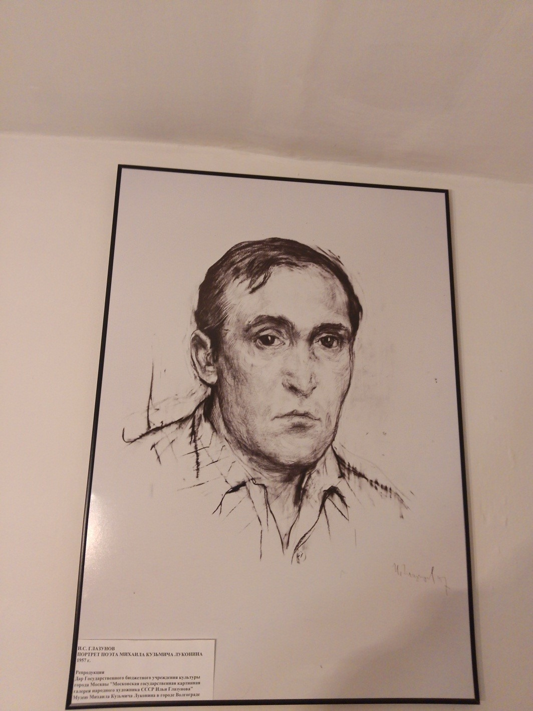
Портрет поэта М.К. Луконина
Кисти И.С. Глазунова. Репродукция.
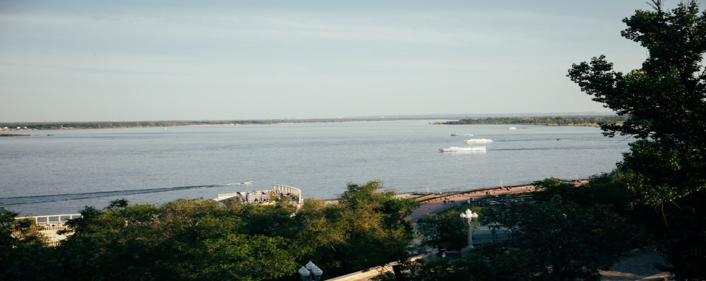
Вид на любимую Волгу
С балкона знаменитой квартиры. Волга вдохновляла поэта на протяжении всей его жизни.
vokm@volganet.ru; www.vokm134.ru
*Администрация оставляет за собой право изменить время и тему мероприятия.